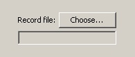

ModbusPal offers the possibility to record a live session of MODBUS requests and replies. The goal of this functionality is to:
When the recorded session is replayed, the physical MODBUS master is replaced by the recorded requests, issued with the same timing as during the live session.
The funny thing is, while a recorded session is replayed, it can be recorded again at the same time. Doing this, the user has the possibility to compare the behavior of the MODBUS slaves and detect differences between two sessions. This possibility can serve as non-regression test.
The recorder is activated by clicking on the Record
button.
The user is immediately prompted for choosing the output file.
Please note that the recording actually starts only after the output file
has been selected.

A recorded session can be replayed by using the Replay
link
instead of “TCP/IP” or “Serial”.
Select a recorded session by clicking on the Choose
button.
A dialog appears for selecting the recorded session file to replay.
When the recorded session file is selected, the session is replayed
by clicking on the Run
button.